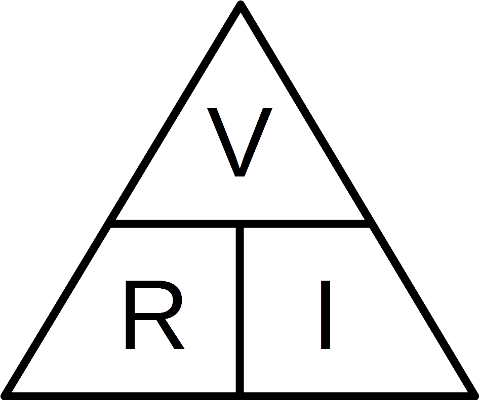

Sobre la clase...
Bienvenidos a la clase de Informatica VI, en esta clase se abordaran los temas como la Robotica, Inteligencia artificial, Sistemas concurrentes, Lenguajes formales, etc.
Los temas que hemos abordado:
Se podría definir robótica como una ciencia que aglutina varias disciplinas o ramas de la tecnología con el objetivo de diseñar máquinas programadas para realizar tareas de forma automática o para simular el comportamiento humano o animal. A grandes rasgos, y sin entrar en mucho detalle, un robot se podría ver como un ordenador con capacidad de movimiento. La robótica se dedica a la construcción de artefactos que intentan materializar el deseo humano de crear seres a su semejanza para responder a algunas de sus necesidades más complejas y, también, para liberarse de trabajos tediosos o peligrosos. La robótica está relacionada con la ingeniería, la construcción y la operación de robots. Es un sector con amplios y diversos usos de consumo.

Arduino se utilizado como un microcontrolador, cuando tiene un programa descargado desde un ordenador y funciona de forma independiente de éste, y controla y alimenta determinados dispositivos y toma decisiones de acuerdo al programa descargado e interactúa con el mundo físico gracias a sensores y actuadores. Arduino hace de interfaz entre un ordenador u otro dispositivo, que ejecuta una determinada tarea, para traducir dicha tarea en el mundo físico a una acción. Y viceversa, gracias a sensores que están conectados a la placa Arduino podemos hacer que el ordenador ejecute determinada acción.

La ley de Ohm se usa para determinar la relación entre tensión, corriente y resistencia en un circuito eléctrico. Para los estudiantes de electrónica, la ley de Ohm (E = IR) es tan fundamental como lo es la ecuación de la relatividad de Einstein (E = mc²) para los físicos. E = I x R Cuando se enuncia en forma explícita, significa que tensión = corriente x resistencia, o voltios = amperios x ohmios, o V = A x Ω.

El álgebra de Boole fue un intento de utilizar las técnicas algebraicas para tratar expresiones de la lógica proposicional. Más tarde como un libro más importante: The Laws of Thought, publicado en 1854. En la actualidad, el álgebra de Boole se aplica de forma generalizada en el ámbito del diseño electrónico. Claude Shannon fue el primero en aplicarla en el diseño de circuitos de conmutación eléctrica biestables, en 1948. Esta lógica se puede aplicar a dos campos: Al análisis, porque es una forma concreta de describir como funcionan los circuitos. Al diseño, ya que teniendo una función lógica aplicamos dicho álgebra para poder desarrollar una implementación de la función. El uso del álgebra de Boole en la Automática se debe a que buena parte de los automatismos responden a la lógica binaria. Las variables binarias de entrada son leídas y producen variaciones en las señales binarias de salidas.